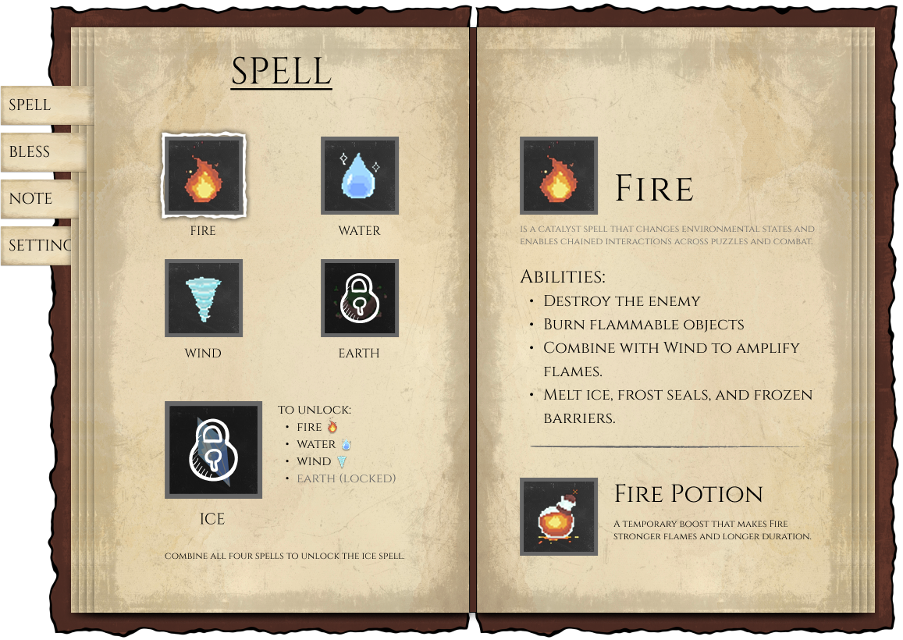
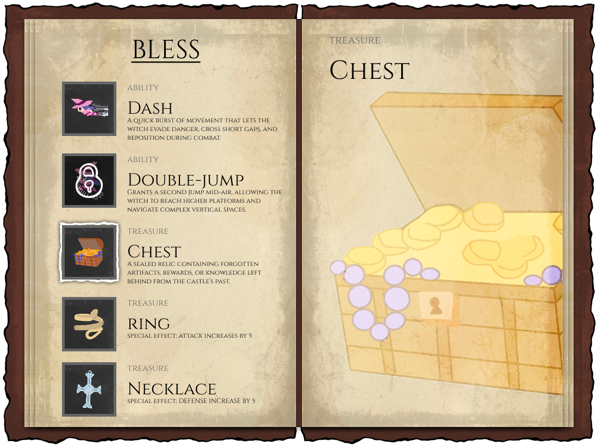
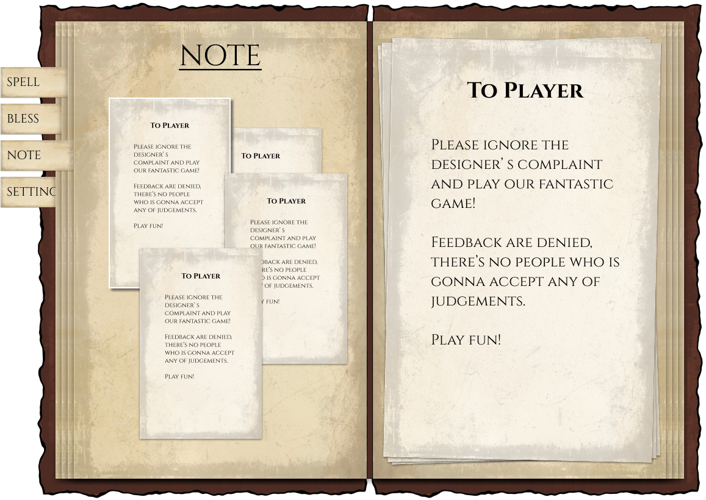
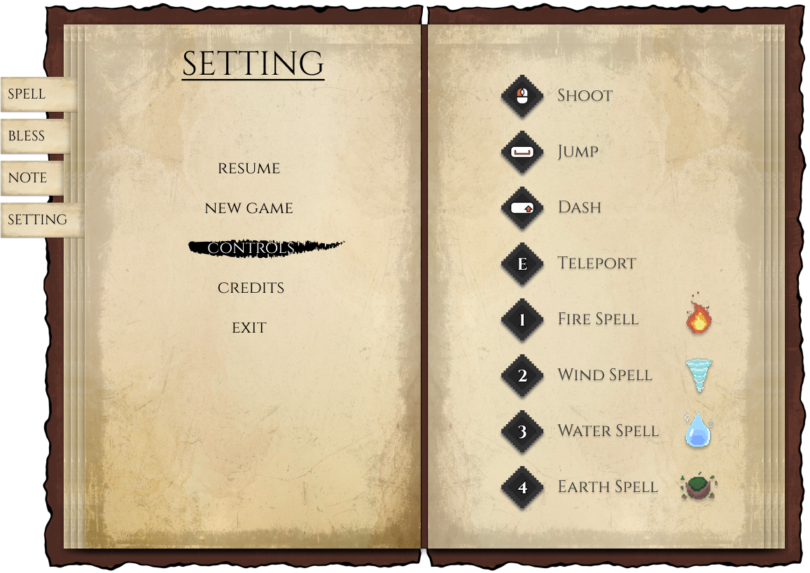

Goal 项目目标
Deliver a complete, playable game experience with a clear loop, spell-driven exploration, seasonal constraints, and rewarding backtracking, while maintaining strong usability, visual cohesion, and stable implementation. 交付一个完整、可游玩的游戏体验；具备清晰循环、以法术驱动的探索、季节机制约束与有回报的回溯探索，同时保证高可用性、视觉一致性与实现稳定性。
01 Description 01 项目简介
Witch's Winter is a 2D platformer-puzzle adventure where players explore a fractured seasonal world as an elemental witch reclaiming her stolen powers. The experience centers on exploration and environmental puzzles rather than combat, players observe the space, experiment with spells and movement, unlock abilities, and return to earlier obstacles to discover new routes and rewards. 《冬境魔女》是一款 2D 平台解谜冒险游戏。玩家扮演一名元素魔女，在破碎的四季世界中夺回被夺走的力量。体验核心以探索与环境谜题为主而非战斗；玩家需要观察空间、尝试法术与移动能力、解锁新能力，并回到早期阻挡点，通过回溯探索发现新的路径与奖励。 Progression is structured around seasonal constraints: each area limits which spells can be used, changing how players traverse and solve puzzles. This creates a consistent “learn → unlock → revisit → discover” rhythm. 进程围绕“季节限制”展开：不同区域会限制可用法术，从而改变玩家的通行方式与解谜策略，形成稳定的“学习 → 解锁 → 回访 → 发现”的节奏。
02 Project Manager 02 项目管理
From a project manager perspective, my role was to protect overall game quality, ensure cross-discipline execution stays coherent, and make key decisions that keep the project shippable, not just “on track,” but genuinely playable and polished. 从项目管理视角，我的职责是守住整体品质、确保跨职能交付保持一致，并在关键节点做出决定，让项目能在交付时达到真正可玩且经过精细打磨后的状态。
My work 我的工作
QUALITY OWNERSHIP — 质量把控 —
Ensured the game experience stays coherent and playable by driving clarity, consistency, and implementation readiness across deliverables. 以体验可玩且一致为目标推动产出，强化清晰度、统一性与实现可落地性，确保交付可测试、可迭代。
DECISION MAKING — 决策推进 —
Made decisive calls on scope, priorities, and trade-offs to prevent drift and keep the game aligned with its intended core loop. 对范围、优先级与取舍做决策，防止偏离目标，使项目始终对齐预期核心循环。
Details 具体内容
— QUALITY OWNERSHIP — 质量把控
I treated quality as end-to-end experience quality: clear game direction, readable UI, consistent presentation, and features that are testable in-engine. I supported proposal and presentation outputs to ensure the team communicated one cohesive game, then carried that same clarity into implementation so what we built matched what we promised. 将质量定义为端到端的体验质量：清晰的游戏方向、可读的 UI、一致的呈现方式，以及能够在引擎中被验证的功能实现。我参与提案与展示内容的打磨，确保团队对外表达的是一个统一的游戏；并把同样的清晰度带入实现阶段，让最终构建与承诺内容一致。
— DECISION MAKING — 决策推进
When trade-offs appeared (scope vs polish, feature ambition vs stability), I made firm decisions on what to prioritize and what to simplify. These calls kept development focused on the core promise: exploration + puzzle progression through spells and seasonal constraints. 当出现取舍（范围 vs 打磨、独特想法 vs 稳定性）时，我会明确选择优先项并推动简化方案。这样的决策让开发始终聚焦于核心承诺：通过法术与季节限制驱动的探索与解谜式进程推进。
03 UX/UI Designer 03 UX/UI 设计
As the UX/UI designer, I owned the game's UI end-to-end, every interface element players interact with, how information is presented, and how UI behavior stays consistent across menus and gameplay. My focus was building a Shell Menu that is fast to scan and an interaction system that makes player actions feel obvious, responsive, and low-friction. 作为 UX/UI 设计师，我负责游戏全部的界面组件，包括玩家会交互到的全部界面元素、信息呈现方式，以及菜单与游戏内的行为的一致性。我的重点是打造一套可快速扫读的 Shell Menu，并建立一套低摩擦的交互规则，让玩家操作更直觉、反馈更及时、响应更可靠。
My work 我的工作
IA — 信息架构 —
Designed the Shell Menu layout and hierarchy, establishing a solid information architecture. 设计 Shell Menu 的布局与层级，建立稳定的信息架构。
UX/UI — UX/UI —
Dedesigned interface wireframe, interaction patterns and feedback rules (states, affordances, navigation behavior) so the UI feels learnable, consistent, and confident under real play. 设计界面框架交互模式与反馈规则（状态、可供性、导航行为），让 UI 在真实游玩中更易学、更一致、且更具确定性。
Details 具体内容
— IA — 信息架构
I explored the Shell Menu structure through layout sketches, then refined it into a cleaner hierarchy and consistent navigation. The goal was fast readability: players can quickly find spells, progression-related info, and key menu sections without hunting through clutter. 我先通过布局草图探索 Shell Menu 的结构，再收敛成更干净的层级与一致的导航方式。目标是“快速可读”：玩家无需在杂乱信息中搜索，就能迅速定位法术、成长相关信息与关键菜单区域。
— UX/UI — UX/UI
I designed the UI as a set of predictable interaction rules rather than isolated screens: consistent selectable/disabled behavior, clear focus and feedback, and navigation patterns that prevent misclicks and hesitation. This keeps player intent and UI response tightly aligned, so the interface supports logical momentum. 我把 UI 设计为一套“可预测的交互规则”，而不是一堆孤立页面：统一的可选/禁用行为、清晰的焦点与反馈，以及能减少误触与犹豫的导航模式。这样能让玩家意图与 UI 响应紧密对齐，使界面更好地支持游玩节奏与行为逻辑。
Work in Progress 进行中
This case study is updated throughout the term; additional finalized prototype will be published in the final build. 本案例将持续随学期更新；更多最终定稿的原型内容会在期末版本中发布。



